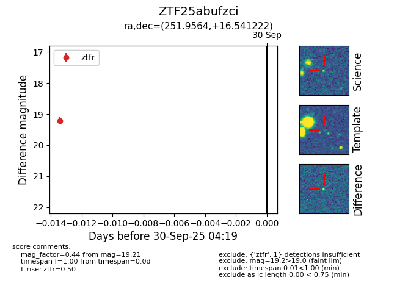

FINK: ZTF25abufzci
Lasair: ZTF25abufzci
ALeRCE: ZTF25abufzci
ZTF25abufzci (ztf,fink)
equatorial (ra, dec) = (251.9564,+16.54122)
galactic (l, b) = (34.9434,+34.61024)

last ztfr=19.21
1 ztfr detections